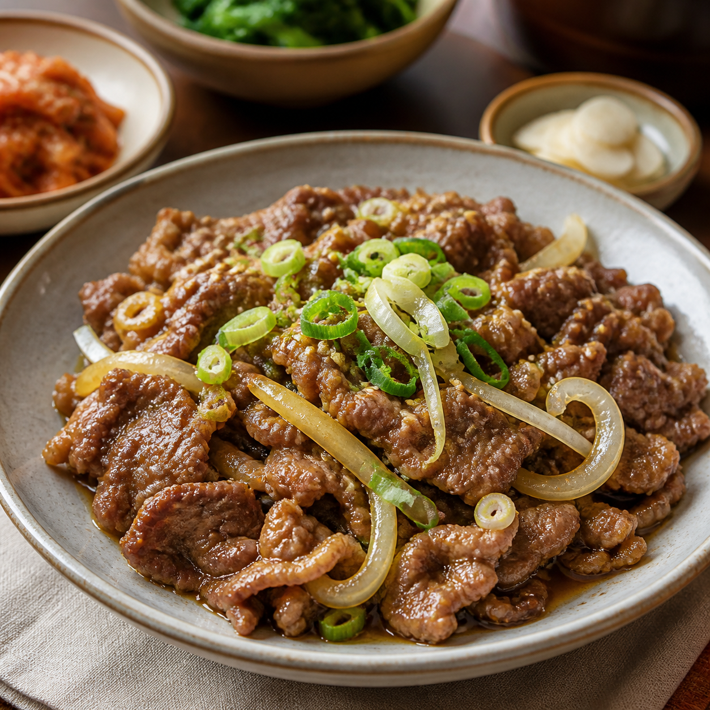

● 온라인
RootLink A
서울 문화센터
현재 작업영상 촬영
배터리82%
마지막 동기화방금 전
콘텐츠38개
고향의 문화를 안전하게 기록하고, 새로운 공동체와 연결합니다. 한 지역의 이야기가 웹사이트를 통해 다른 지역의 로봇과 사람들에게 전달됩니다.
각 이야기에는 한 가족과 지역의 고유한 경험이 담겨 있습니다.
모든 콘텐츠는 촬영자의 동의와 공개 범위를 먼저 확인합니다. 미성년자의 영상은 기본적으로 비공개이며, 얼굴 가림과 삭제 요청을 언제든 지원합니다.
국가가 아닌 지역과 가족의 경험으로 문화를 탐색합니다.
로봇에서 촬영한 영상이나 음성을 불러와 안전하게 보관할 수 있습니다.
문화의 진위를 판정하지 않고, 개인정보·동의·출처·표현 방식을 검토합니다.
시리아 · 알레포 · 아랍어 · 가족 문화 기록
우크라이나 · 리비우 · 우크라이나어 · 가족 전용
각 지역의 RootLink 상태를 확인하고 승인된 이야기를 전송합니다.
서울 문화센터
부산 해솔초등학교
독일 베를린 난민센터
나이와 상황에 맞춘 문화 콘텐츠로 배움과 대화를 시작합니다.
우리 가족의 영상, 고향 언어, 음식과 명절을 만나며 나의 뿌리를 배웁니다.
학교, 병원, 교통과 공공기관은 물론 회사생활과 취업에 필요한 문화를 배웁니다.
인사법, 음식과 이름을 소재로 난민과 현지 주민이 서로의 문화를 나눕니다.
처음 일자리를 찾는 순간부터 직장에 적응할 때까지 꼭 필요한 한국의 일 문화를 알아보세요.
이력서 작성, 채용 공고 확인, 면접 약속과 기본 표현을 배웁니다.
동료에게 인사하고 호칭을 사용하며 업무를 질문하는 방법을 익힙니다.
보고, 회의, 메신저에서 자주 쓰는 표현과 서로 존중하는 대화법을 알아봅니다.
근로계약서, 근무시간, 급여명세서와 도움이 필요할 때의 상담 창구를 확인합니다.
영상 속 가족은 봄 명절에 어떤 음식을 함께 만들었나요?
문화 영상
비빔밥·한복·국악 글자가 적힌 카드를 카메라에 보여주세요.

불고기카메라를 준비하고 있습니다…
사용자에게 가장 편안한 화면과 콘텐츠를 보여드릴게요.